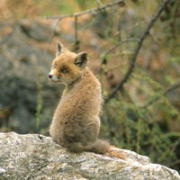

Animals In mountains which still provide a home for the brown bear, it is not surprising that the wildlife is extraordinary - chamoix, red and roe deer and eagles. And also steinbock, foxes, badgers, martens, black grouse, capercaillie, marmots, ptarmigan and numerous other large and small animals. Thanks to its unspoilt and diversified environment, the Adamello Brenta Nature Park boasts an extraordinary wealth of animals. All the typical Alpine species are present, in particular the brown bear (Ursus arctos), symbol of the Park, which hovered on the brink of extinction and is today in expansion, thanks to a specific reintroduction project. The other "great carnivores" (wolf and lynx) are absent while the fox (Vulpes vulpes), badger (Meles meles), stone marten (Martes foina), pine marten (Martes martes), stoat (Mustela erminea) and weasel (Mustela nivalis) are common.
The presence of mountain ungulates is particularly outstanding. As well as a consistent population of chamoix (Rupicapra rupicapra), the Park also boasts a colony of steinbock (Capraibex) the result of a multi-year reintroduction project. The Park's ungulates include the red deer (Cervus elaphus), roe deer (Capreolus capreolus) and mouflon (Ovis musimon), the latter the result of introduction projects initiated at the beginning of the 1970s.
The rodent population in the Park is equally rich and interesting. Among the most common and characteristic are the red squirrel (Sciurus vulgaris) and Alpine marmot (Marmota marmota). There are also moderately large populations of lagomorphs, the European hare (Lepus europaeus) and mountain hare (Lepus
timidus). The birds present in the Park include numerous typical Alpine species, first and foremost all the Galliformes represented by the ptarmigan (Lagopus mutus), rock partridge (Alectoris graeca), black grouse (Tetrao tetrix), capercaillie (Tetrao urogallus) and hazel grouse (Bonasa bonasia).
The raptors nesting in the Park include the golden eagle (Aquila chrysaetos), common buzzard (Buteo buteo), goshawk (Accipiter gentilis), sparrowhawk (Accipiter nisus), honey buzzard (Pernis apivorus) and kestrel (Falco tinnunculus).
- Bear
- Fox
- Squirrel